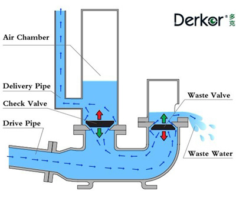
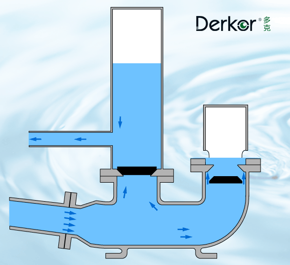
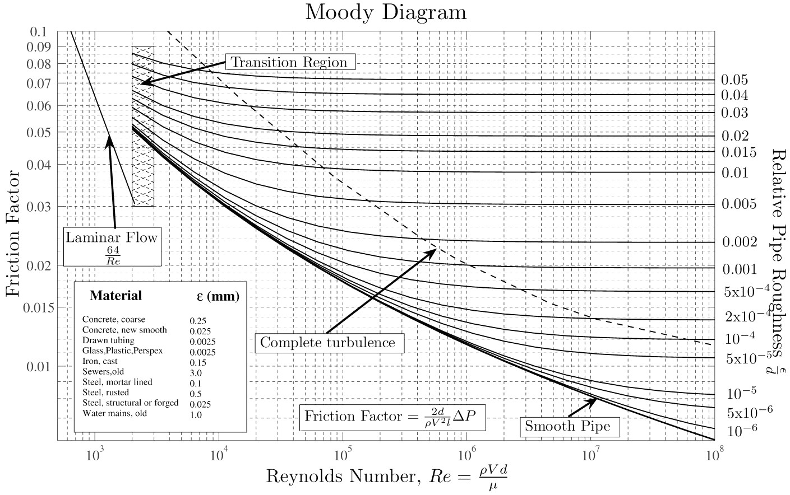

1 Pa is 1 \(N/m^2\) which is equivalent to 0.1 \(kg/m^2\) with \(g = 10 m/s^2\)
So \(10^5 Pa\) is equivalent to \(10 000 kg/m^2\)
1\(m\) water is 1000\(kg/m^2\)
10\(m\) water is 10 000\(kg/m^2\)
Total head: elevation head + pressure head + velocity head
Elevation head: \(z\)
Pressure head: \(\frac {p}{\rho g}\)
Elevation head + pressure head = the piezometric head \(h\) (static hydraulic head) that we used for Darcy’s Law
But we neglected the velocity head, because of slow velocities in porous media
Velocity head:\(\frac {v^{2}}{2g}\)
Bernouilli’s equation
States that the total head \(H\) is constant:
\[H = z+{\frac {p}{\rho g}}+{\frac {v^{2}}{2g}}= h + \frac {v^{2}}{2g} = constant\] where \(z\) is the elevation head and \(h\) the piezometric head
Assumptions:
no friction
incompressible fluid
steady flow
homogeneous fluid
Exercise: flow out of a reservoir
An open top reservoir (atmospheric pressure) is pierced at \(z_1\), d=20cm below the top water level \(z_2\). Calculate the average flow velocity out of the hole.
\(z_1 + p_{atmo}/\rho g = v^2/(2g)+z_2+p_{atmo}/\rho g\)
\(v= (2gd)^{1/2} = (20*0.20)^{1/2} = 2m/s\)
Pump example: the ram pump
How would we design a pump that doesn’t use any external energy (only gravity)?
By using the momentum of falling water and wasting much water in the process: the ram pump
drive pipe brings intake water
delivery pipe is the pressurized pipe
check valve to stop pressurized pipe from emptying
waste valve to evacuate excess water and control the ram effect
air chamber to make the ram effect smoother to avoid damaging the pump
Schematics of a ram pump

Animation of a ramp pump

How much water can it pump
Can you guess the likely formula to calculate this?
\(D = E*Q*F/L\)
Where: \(D\) amount delivered in cube meters per hour.
\(Q\) quantity of water supplied from the source in cube meters per hour.
\(F\) the fall or height of the source above the ram in meters.
\(L\) the lift height of the point of use above the ram in meters
\(E\) the efficiency of the ram (typically 60%)
How does the efficiency likely vary as a function of the lift / working fall ratio
The efficiency is likely to drop with high lift / working fall ratios due to more water wastage, higher velocities, turbulence…
Other instances of water hammer
Why can a water hammer be a problem with pumps and pipes?
The ram effect can destroy valves or pipes by applying sudden high pressure
How is that mitigated in pump pressurized networks?
Pressure release chambers or pressure release valve
Analogy with the cardio vascular system
The cardio-vascular system also has a pulse pump. The flow in blood vessels is however more regular, like in the ram pump after the air chamber. Which mechanical property of the blood vessels plays an analog role as the air chamber?
The elasticity of the arteries
Micro-hydropower exercise
NVE - småkraft potensial: estimate the hydro-electric potential (“Produksjon”) of some sites around Sogndal in GWh/year (using mean available discharge “Vannføring” and elevation difference “Brutto fallhøyde”)
The shear stress \(\tau\) (unit of pressure: Pa), is the ratio of shear forces \(F\) per unit area \(A\): \(\tau=\frac{F}{A} = \mu {\frac {du}{dy}}\)
with \(\mu\) the viscosity (in \(Pa*s\)), and \(\frac{du}{dy}\) the velocity gradient perpendicular to the flow direction (\(m/s\) per \(m\) gives \(s^{-1}\))
Viscosity of water at \(20^{\circ} C\) is \(10^{-3}\) Pa.s
Bernouilli’s equation + friction factor
A head loss term \(h_l\) is added to Bernouilli’s equation to account for total head losses due to friction:
\(h_l\) can be expressed as a function of a dimensionless friction factor \(f\):
\(h_l=f*\frac{L.v^2}{D*2g}\) where \(L\) and \(D\) are the length and diameter of the pipe
Types of flows
Laminar vs turbulent flows
What kind flows can we have (from a fluid dynamics perspectice)?
Laminar flow occurs when a fluid flows in parallel layers, with no disruption between the layers (viscous forces are dominant). Flow in slow canals can be laminar
Turbulent flow characterized by sudden changes in pressure and flow velocity (inertial forces are dominant). White water, wind behind an obstacle are turbulent
Characterizing turbulent flow: Reynolds number
The Reynolds number is defined as
\(Re =\frac{\rho vL}{\mu }\)
where: \(\rho\) is the density of the fluid (\(kg/m^3\))
\(v\) is a characteristic velocity (m/s), mean velocity in our case
\(L\) is a characteristic linear dimension. In the case of a pipe, it is its diameter
\(\mu\) is the dynamic viscosity of the fluid (\(Pa.s\) or \(N.s/m^2\) or \(kg/(m·s)\))
Reynolds number example
\(Re < 2000\) usually qualifies as laminar \(Re > 4000\) is clearly turbulent. In between is a transition between those 2 flow regimes
Example: Water at 20c (\(\mu = 10^{-3}\)), flowing at 0.1m/s in a 10cm wide pipe:
Calculate the Reynolds number:\(Re =\frac{\rho vL}{\mu }\)
\(Re = 0.1*0.1*1000/10^{-3} = 10 000 > 4000\)
So the flow in the pipe is turbulent
Friction factor

Poiseuille Law for laminar flow
Can be derived theoretically
\(v =-\frac{dh}{ds} \frac{\rho g D^{2}}{32\mu}\)
\(v\) is the water velocity in the pipe \(\frac{dh}{ds}\) is the hydraulic head gradient over the length of pipe (often the slope of the pipe, but not always),
\(\mu\) is the dynamic viscosity,
\(D\) is the pipe diameter.
Hazen Williams equation for turbulent flow
It is an empirical formula used to deisgn water networks, irrigation systems…
\(v=C{\sqrt{RS}}\)
\(v\) is the water velocity in the pipe
\(C\) is a roughness coefficient
\(R\) is the hydraulic radius (pipe radius in case of a pipe)
\(S\) is the slope of the pipe
Take home messages
Bernouilli equation: conservation of total head if we ignore friction
Frictional losses of energy create head losses
If head losses are important, they must be added to Bernouilli’s Law
Viscosity is temperature dependent. Is ratio of shear stress / velocity gradient
Viscosity of water at 20c is 1*10^-3 Pa.s
Reynolds number measures importance of viscous forces
If Reynolds number > 2000, then turbulent flow
Friction factor for laminar pipe flow: f = 64/R
This gives the mean velocity of laminar flow in a pipe (Poiseuille)
Mean velocity proportional to \(D^2\) for laminar flow and \(D^{1/2}\) for turbulent flow
Further resources
Book chapters
Elements of physical hydrology: Chapter 3 (covers key topics in a clear and math-light way)